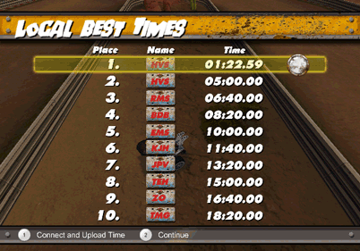
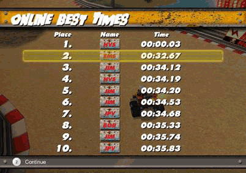

12 |
Time Trial |
 |
Choose a track and race against the clock to set your personal best lap times. Once you've set a lap time you're happy with, pause the game and retire from the race. When you retire, any new best times will be added to your Local Best Times table. You will also have the opportunity to post your best time online to try to out-rank other players on the Nintendo Wi-Fi Connection Leaderboards!
Track Select – Before you enter a Time Trial race, you can select which track to play. Drive as many laps as you like, then pause the game to retire and save your best times.
Local and Online Leaderboards Are you ready to take on the world, pitting your best laps against the greatest racers out there? You can record up to 10 of your best lap times for each track locally. New times are automatically saved when you retire from a Time Trial race. After you set your best time, you can connect to the online leaderboards to upload it and see how you rank.
At the Local Best Times screen you will see any new times you've set for the race highlighted. If you want to upload your best time online, follow the on-screen instructions. If the icon next to your lap time is dim, that means your time has not been uploaded yet. A bright icon means the time has been uploaded, but even if you haven't set a new time you can still connect to see your rank.

 |
 |
 |
 |